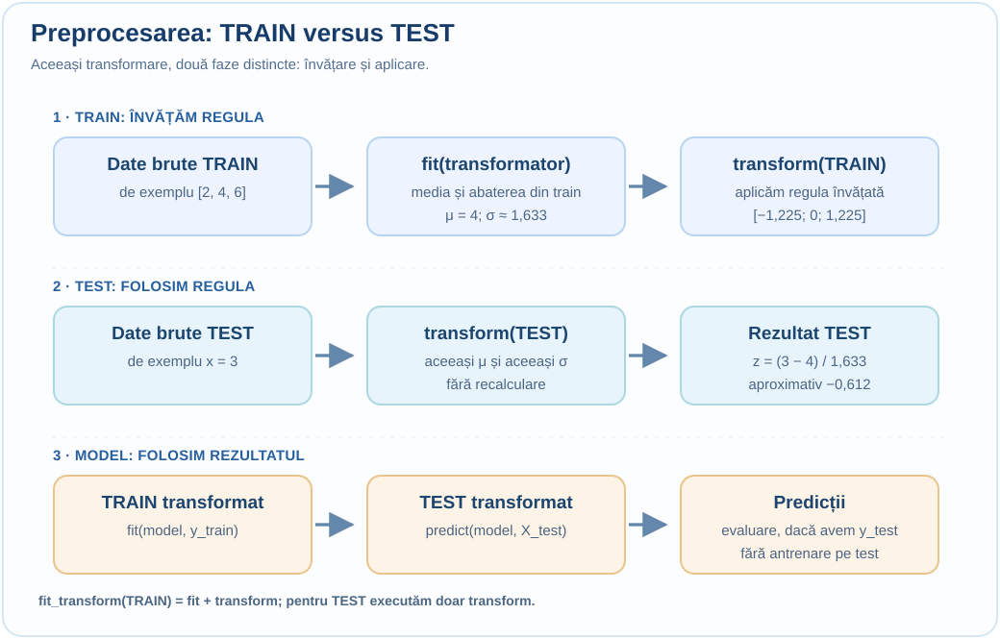
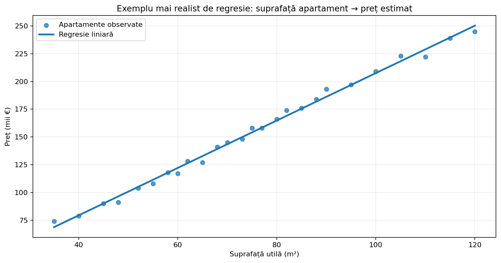
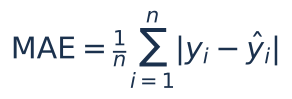
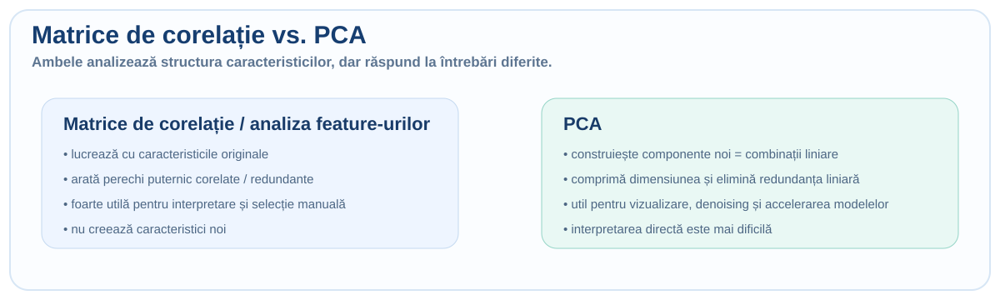

Un ghid vizual și practic al întregului experiment: împărțirea datelor, preprocesare corectă, pipeline-uri,
stratificare, evaluare, validare încrucișată și alegerea hiperparametrilor. Fiecare etapă este explicată pe
exemple de clasificare și regresie.
ObiectivLa final vei ști exact ce învață un transformator la fit, ce se întâmplă la transform pe test și de ce testul final nu trebuie folosit pentru alegerea modelului.
01
1. De ce scikit-learn?
O bibliotecă Python care pune la dispoziție algoritmi și un mod de lucru consecvent.
Scikit-learn (importat prin sklearn) oferă implementări pentru clasificare, regresie,
clustering, transformarea caracteristicilor și evaluarea modelelor. Biblioteca se bazează pe NumPy și se
folosește frecvent împreună cu Pandas și Matplotlib.
Scopul acestei introduceri este să înțelegi fluxul comun al unui experiment. Regresia liniară, regresia
logistică, K-NN, arborii și SVM vor fi studiate separat în capitolul Învățare supervizată.
Instalare
Într-un terminal poți rula python -m pip install scikit-learn matplotlib pandas. Într-un
notebook Jupyter poți folosi %pip install scikit-learn. Numele pentru instalare este scikit-learn,
iar pentru import este sklearn.
Ce înseamnă preprocesare?
Preprocesarea modifică reprezentarea datelor înainte ca modelul să învețe: completăm valori lipsă, scalăm
coloane numerice, transformăm categorii în numere, eliminăm sau construim caracteristici. Unele operații
au parametri de învățat (media, mediana, minimul, maximul, vocabularul de categorii); altele
sunt reguli fixe (de exemplu, transformarea np.log1p cu o regulă prestabilită). Când există
parametri învățați, îi estimăm numai din train.
1. Separi datele2. fit pe train3. transform pe train4. transform pe validare/test5. Evaluezi fără a reînvăța
02
2. Date de intrare: X și y
Fiecare rând din X reprezintă o observație, iar fiecare coloană o caracteristică.
Pentru o problemă supervizată, matricea X are de regulă forma (n_samples,
n_features), iar vectorul y conține ținta corespunzătoare fiecărei observații. În
clasificare, y este o etichetă discretă; în regresie, de regulă o valoare numerică.
Un singur exemplu cu două caracteristici se transmite la predict ca [[2.5,
1.2]], nu ca [2.5, 1.2], deoarece API-ul așteaptă două dimensiuni.
03
3. Seturi de date disponibile în bibliotecă și date externe
Seturi incluse în scikit-learn, dar și fluxul corect pentru un fișier CSV propriu.
Scikit-learn oferă câteva seturi clasice gata de folosit prin sklearn.datasets. Sunt foarte
utile pentru primele experimente, pentru că te lasă să te concentrezi pe fluxul de lucru, nu pe descărcarea
și curățarea datelor.
Date incluse în bibliotecă
load_iris(), load_wine(), load_diabetes() sau fetch_california_housing()
sunt bune pentru exemple rapide. Primele două sunt de clasificare, ultimele două ilustrează
regresia.
Date externe
În practică vei lucra des cu fișiere CSV, Excel sau baze de date. De regulă citești tabelul cu
Pandas, alegi coloanele pentru X, iar coloana-țintă devine y.
Setul Iris rămâne un exemplu foarte bun pentru primele clasificatoare: trei clase, patru
caracteristici și observații echilibrate.
Încărcarea rapidă a unui set inclus în scikit-learn
Dacă ai un fișier propriu, de exemplu elevi.csv, fluxul devine:
Citire CSV cu Pandas și separarea lui X de y
importpandasaspdfromsklearn.model_selectionimporttrain_test_split# Exemplu: ultima coloană este ținta# nume, varsta, medie, absente, admisdf=pd.read_csv("elevi.csv")print(df.head())X=df.drop(columns=["admis"])y=df["admis"]X_train,X_test,y_train,y_test=train_test_split(X,y,test_size=0.2,random_state=42,stratify=y)print(X_train.shape,X_test.shape)
Ce alegi pentru X și pentru y?
X conține caracteristicile pe baza cărora modelul învață; y conține
răspunsul corect. Pentru clasificare, y este de obicei o clasă; pentru regresie,
y este o valoare numerică.
Tip de set
Exemple
Avantaj
Atenție
Set inclus
load_iris(), load_diabetes()
Pornești imediat
Nu reflectă întotdeauna toate problemele datelor reale
CSV propriu
pd.read_csv(...)
Foarte apropiat de situațiile reale
Trebuie să gestionezi lipsuri, categorii, tipuri de date
Date oficiale de concurs
train.csv / test.csv
Exact contextul problemei
Etichetele pentru test pot lipsi complet
04
4. Separarea datelor: train, validare și test
De ce separăm datele, ce înseamnă stratificarea și cum diferă clasificarea de regresie.
În orice proiect serios, separarea datelor se face înainte de preprocesare. Vrem să simulăm
cât mai corect momentul în care modelul întâlnește exemple noi.
1. Împărțire
Date etichetateX și y
↓
Separare inițialăînainte de fit
↓
Submulțimidezvoltare + test
2. Dezvoltare
Dezvoltaretrain + validare / CV
↓
Selecție și
fitdoar pe datele de dezvoltare
↓
Model alesregulă de predicție fixată
3. Evaluare
Test finalfără alegeri suplimentare
↓
Transform + predictfără fit nou
↓
Metricietichetele reale, dacă există
Figura 1 — Protocolul complet: dezvoltarea este separată de testul final; predicția pe test nu
reantrenează modelul.

1. Învățăm transformarea
TRAIN brut[2, 4, 6]
↓
fit(transformator)μ = 4, σ ≈ 1,633
↓
transform(TRAIN)[−1,225; 0; 1,225]
2. Aplicăm transformarea
TEST brutx = 3
↓
transform(TEST)aceeași μ și σ
↓
TEST transformatz ≈ −0,612
3. Folosim datele procesate
TRAIN transformatfit(model)
↓
TEST transformatpredict(model)
↓
Ieșirepredicție / metrică
Figura 2 — Preprocesarea, prezentată separat: învățăm parametrii pe train și îi aplicăm fără
recalculare pe test.
Ce rol au seturile?
Train
Modelul și transformările învață din acest set. Aici se estimează mediile, deviațiile standard,
categoriile observate, coeficienții modelului etc.
Validare
Este folosită pentru comparații între modele sau între hiperparametri. Dacă folosești validare
încrucișată, rolul de validare este jucat pe rând de fiecare fold.
Test final
Se consultă la final, după ce toate deciziile sunt luate. Nu se folosește pentru a decide ce model
este „mai bun”.
Set de dezvoltare
În multe materiale apare noțiunea de development set: totalitatea datelor pe care ai voie să
optimizezi (train + validare / fold-uri CV), fără testul final.
Ce face stratify la train_test_split?
Pentru clasificare, stratify=y cere ca împărțirea să păstreze aproximativ proporțiile claselor
din țintă. Dacă întregul set are 70% exemple din clasa A și 30% din clasa B, atunci și submulțimile
rezultate vor respecta aproximativ aceeași proporție.
Stratificare interactivă
Comparație între stratify=y și stratify=X[:, 0].
Clasa 0 Clasa 1
TRAIN
TEST
Context
Are sens să folosești stratify?
Cum?
Comentariu
Clasificare
Da, de obicei
stratify=y
Păstrează proporțiile claselor, mai ales când clasele sunt dezechilibrate.
Regresie
Nu direct, în general
De obicei stratify=None
y este continuu; dacă fiecare valoare este aproape unică, stratificarea nu mai are
semnificație naturală.
Regresie cu distribuție foarte dezechilibrată
Uneori, cu grijă
binning manual al lui y
Poți discretiza ținta în intervale, dar această tehnică trebuie justificată și nu este
obligatorie.
Diferența importantă dintre stratify=y și
stratify=X[:,0]
stratify=y păstrează distribuția răspunsului pe care vrem să-l prezicem. stratify=X[:,0]
păstrează distribuția unei caracteristici de intrare. Uneori și aceasta poate fi utilă, dar scopul este
diferit.
Clasificare vs. regresie
În clasificare
Ținta aparține unui număr finit de clase. De aceea, păstrarea proporțiilor prin
stratify=y are o interpretare clară și este frecvent recomandată.
În regresie
Ținta este numerică și poate lua foarte multe valori distincte. De cele mai multe ori nu stratifici
direct. Te interesează mai mult o împărțire rezonabilă și măsuri potrivite ale erorii.
05
5. Interfața comună: fit, predict, score și alte metode utile
Aceeași interfață pentru modele diferite: de aici vine mare parte din eleganța lui
scikit-learn.
Un mare avantaj al bibliotecii este interfața comună. Indiferent că lucrezi cu un arbore, o
regresie logistică, un K-NN sau un regressor liniar, structura de bază rămâne asemănătoare.
1. Construieștimodel = Estimator(...)Alegi
clasa și îi setezi hiperparametrii.
→
2. Antrenezimodel.fit(X_train, y_train)Modelul
învață din datele de antrenare.
→
3. Prezicimodel.predict(X_test)Obții ieșiri
pentru observații noi.
→
4. Evalueziscore(...) sau metriciMăsori
performanța în funcție de problemă.
Metode și atribute întâlnite des
Element
Rol
Exemplu
Observație
fit(X, y)
Antrenează modelul
tree.fit(X_train, y_train)
Returnează de regulă chiar obiectul antrenat.
predict(X)
Produce ieșiri
tree.predict(X_test)
În clasificare întoarce clase; în regresie valori numerice.
score(X, y)
Metrică implicită
tree.score(X_test, y_test)
La clasificare este deseori acuratețe; la regresie, de multe ori R².
predict_proba(X)
Probabilități pe clase
logreg.predict_proba(X_test)
Nu toate modelele implementează această metodă.
get_params()
Arată hiperparametrii
tree.get_params()
Util înainte de GridSearchCV.
atribute terminate în _
Valori învățate la fit
classes_, coef_, feature_importances_
În scikit-learn, sufixul _ indică ceva disponibil după antrenare.
Clasificare: interfața de bază explicată pas cu pas
Sunt valorile setate înainte de antrenare: max_depth, n_neighbors,
C, alpha etc. Ele controlează flexibilitatea sau regularizarea modelului.
Ce sunt parametrii învățați?
Sunt valorile obținute la fit: de exemplu coeficienții unei regresii sau structura
efectivă a unui arbore. Acestea depind de date.
Exemple de contexte
Arbori de decizie: pornești de la DecisionTreeClassifier sau DecisionTreeRegressor;
hiperparametru-cheie: max_depth.
Modele liniare: pornești de la LinearRegression, Ridge,
Lasso, LogisticRegression; hiperparametri importanți: alpha,
C.
K-NN: pornești de la KNeighborsClassifier sau
KNeighborsRegressor; hiperparametri importanți: n_neighbors,
weights, metric.
06
6. Regresia în scikit-learn: modele, exemple și puncte de pornire
Mai mult decât un singur exemplu: cum gândești o problemă de regresie și de unde pornești în
practică.
În regresie, ținta y este numerică: preț, temperatură, consum, durată, scor, număr de vizitatori
etc. Vrem să aproximăm o relație dintre intrări și o valoare continuă.

Exemplu realist: din suprafața unui apartament vrem să estimăm prețul. Punctele albastre sunt
observațiile, iar linia roșie este o aproximare liniară.
Primul model: regresia liniară
Model liniar cu p caracteristici
Coeficienții β₀,...,βₚ sunt estimați la fit. Pentru o singură caracteristică rezultă o dreaptă.
Regresie liniară minimă, dar corectă
importnumpyasnpfromsklearn.linear_modelimportLinearRegressionfromsklearn.model_selectionimporttrain_test_splitX=np.array([[40],[50],[60],[70],[80],[90],[100]])y=np.array([82,98,119,138,161,185,207])X_train,X_test,y_train,y_test=train_test_split(X,y,test_size=0.25,random_state=42)model=LinearRegression()model.fit(X_train,y_train)print("coef_ =",model.coef_)print("intercept_ =",model.intercept_)print("predicție pentru 75 m² =",model.predict([[75]]))
Unde găsești modele de regresie în documentație?
Familie
Clase de început
Când merită încercate
Hiperparametri utili
sklearn.linear_model
LinearRegression, Ridge, Lasso
Relații aproximativ liniare, baseline puternic
alpha, fit_intercept
sklearn.neighbors
KNeighborsRegressor
Relații nelineare locale, puține date
n_neighbors, weights, metric
sklearn.tree
DecisionTreeRegressor
Relații nelineare ușor de explicat
max_depth, min_samples_leaf
sklearn.ensemble
RandomForestRegressor
Performanță bună pe multe seturi tabelare
n_estimators, max_depth
LinearRegression
Bun ca punct de plecare. Dacă relația este aproape liniară și caracteristicile sunt bine alese, poate
fi surprinzător de competitiv.
Ridge și Lasso
Adaugă regularizare. Ridge stabilizează coeficienții; Lasso poate împinge
unii coeficienți exact la zero.
Arbori / RandomForest
Captează relații nelineare și interacțiuni fără să fie nevoie de o formulă explicită.
KNeighborsRegressor
Prezice din vecini apropiați; este sensibil la scalarea caracteristicilor și la alegerea lui
k.
De unde pornești practic?
Pentru un set tabelar, un traseu sănătos este: LinearRegression sau Ridge ca
baseline, apoi RandomForestRegressor și eventual KNeighborsRegressor dacă
relația pare locală și poți scala datele.
07
7. Preprocesarea caracteristicilor, pas cu pas
Ce înseamnă preprocesarea, când este necesară și cum se aplică corect pe train și pe
test.
Preprocesarea înseamnă orice transformare aplicată caracteristicilor X înainte de model:
completarea valorilor lipsă, scalare, codificare de categorii, normalizare etc. Nu există o singură rețetă
universală; alegerea depinde de date și de model.
Ideea centrală
fit învață regulile transformării din train. transform aplică aceeași regulă pe
train, validare, test și exemple complet noi. Nu refacem statistica pe test.
Transformări explicate pas cu pas
Alege un transformator și urmărește separat ce se întâmplă pe train și pe test.
Când este util fiecare transformator?
Transformator
Ce învață din train
Când ajută
Atenție
StandardScaler
Media și abaterea standard pe coloană
Variabile pe scări diferite; modele sensibile la scară
Nu elimină valorile extreme; nu garantează distribuție normală
MinMaxScaler
Minimul și maximul pe coloană
Când e util un interval fix pe train, de pildă [0, 1]
Testul poate avea valori sub 0 sau peste 1; nu este eroare
RobustScaler
Mediana, Q1 și Q3
Caracteristici cu valori extreme
Nu elimină outlierii; doar folosește statistici mai robuste
SimpleImputer
Media, mediana sau categoria frecventă
Valori lipsă, inclusiv lipsuri pe test
Nu estimăm media din test; uneori ajută indicatori de lipsă
OneHotEncoder
Categoriile observate pe train
Categorii nominale (oraș, tip, culoare)
handle_unknown="ignore" tratează categorii noi prin zerouri
OrdinalEncoder
Categoriile și corespondența lor cu numere
Atribute cu ordine explicită sau unele modele
Codurile 0, 1, 2 pot sugera o ordine artificială
Normalizer
Nu învață parametri globali; normalizează fiecare rând
Vectori de text și comparații de direcție / cosinus
Nu este același lucru cu StandardScaler; nu folosește media coloanelor
Exemplu practic: tabel cu numere, lipsuri și categorii
Un magazin vrea să prezică dacă un produs va fi returnat. Coloanele numerice (preț, timp de livrare) au
valori lipsă; coloana categorie este textuală. ColumnTransformer definește două
fluxuri paralele, reunite înainte de clasificator.
ColumnTransformer + două sub-pipeline-uri
importpandasaspdfromsklearn.composeimportColumnTransformerfromsklearn.imputeimportSimpleImputerfromsklearn.linear_modelimportLogisticRegressionfromsklearn.model_selectionimporttrain_test_splitfromsklearn.pipelineimportmake_pipelinefromsklearn.preprocessingimportOneHotEncoder,StandardScalerX=pd.DataFrame({"pret":[10,15,None,22,30,12,27,8],"livrare_zile":[2,5,1,None,4,2,7,1],"categorie":["A","B","A","C","B","A","C","B"]})y=[0,1,0,1,1,0,1,0]X_train,X_test,y_train,y_test=train_test_split(X,y,test_size=0.25,stratify=y,random_state=42)numeric=make_pipeline(SimpleImputer(strategy="median"),StandardScaler())categoric=make_pipeline(SimpleImputer(strategy="most_frequent"),OneHotEncoder(handle_unknown="ignore"))preprocess=ColumnTransformer([("num",numeric,["pret","livrare_zile"]),("cat",categoric,["categorie"])])pipe=make_pipeline(preprocess,LogisticRegression(max_iter=1000))pipe.fit(X_train,y_train)# învață DOAR din trainprint(pipe.predict(X_test))# aplică transformările învățateprint(pipe.predict(pd.DataFrame([{"pret":17,"livrare_zile":3,"categorie":"D"}])))# "D" nu a existat în train
08
8. make_pipeline: ce se execută la fiecare pas?
Un flux unic și sigur pentru transformări + model, explicat vizual și operațional.
O pipeline este un obiect unic care leagă transformările și modelul final. Avantajul major este că reduce
erorile de protocol: când scrii pipe.fit(X_train, y_train), știi că transformările vor fi
învățate corect doar din train.
Ce execută pipeline-ul?
Comută între antrenare și predicție, apoi parcurge pașii.
1
→
2
→
3
→
4
De ce make_pipeline este atât de util?
Eviți să uiți transformarea pe test sau să faci din greșeală fit pe date care nu trebuie
văzute.
În validarea încrucișată, fiecare fold primește automat o pipeline nouă, neantrenată. Nu „se moștenesc”
statisticile între fold-uri.
În GridSearchCV, hiperparametrii transformatoarelor și ai modelului pot fi optimizați
împreună.
Când „se învață” parametrii și când doar „se folosește” ce s-a învățat?
La fit, fiecare transformator și model își estimează parametrii pe baza datelor train. La
predict sau transform pe test, acei parametri sunt deja fixați. Cu alte
cuvinte: pe test nu mai înveți, doar aplici.
09
9. Matricea de confuzie: citire, desen și cod
Cum citești corect liniile, coloanele, diagonala și rolul culorilor într-o heatmap.
Matricea de confuzie arată câte exemple din fiecare clasă reală au fost prezise în fiecare clasă posibilă. În
multe probleme de clasificare, ea este mai informativă decât un singur număr precum acuratețea, pentru că
îți spune unde greșește modelul.
Rânduri
Rândul i corespunde clasei reale i. Privind pe rând, observi cum s-au
împărțit exemplele adevărate ale unei clase între predicțiile posibile.
Coloane
Coloana j corespunde clasei prezise j. Privind pe coloană, vezi câte
exemple au fost etichetate de model drept clasa j.
Diagonală
Elementele de pe diagonală sunt predicții corecte: clasa reală coincide cu clasa prezisă.
În afara diagonalei
Aici apar confuziile. De exemplu, „real 2, prezis 1” înseamnă exemple din clasa 2 confundate cu clasa
1.
Matrice interactivă
Schimbă numărul de clase și apasă pe o celulă. Lângă diagramă, culoarea mai intensă înseamnă o
valoare mai mare.
clasă REALĂ
clasă PREZISĂ
multepuține
De ce sunt utile culorile?
O heatmap nu înlocuiește numerele, ci le face mai ușor de citit. O culoare mai intensă marchează o valoare
mai mare. La multe clase, această convenție te ajută să vezi rapid dacă performanța este concentrată pe
diagonală sau dacă apar benzi de confuzie între clase apropiate.
În probleme cu multe clase, diagonală puternică = model bun; blocuri sau benzi în afara diagonalei = clase
care seamănă între ele. De aceea, pentru un set de 8 sau 10 clase, matricea de confuzie devine un instrument
vizual esențial.
Cum calculezi și afișezi matricea de confuzie
fromsklearn.metricsimportconfusion_matrix,ConfusionMatrixDisplayimportmatplotlib.pyplotasplt# Exemplu complet, cu etichete reale și etichete prezisey_test=[0,0,1,1,2,2,2]y_pred=[0,1,1,1,2,0,2]cm=confusion_matrix(y_test,y_pred)print(cm)# Varianta vizuală directăConfusionMatrixDisplay.from_predictions(y_test,y_pred)plt.show()# Sau, dacă ai deja matricea calculată:disp=ConfusionMatrixDisplay(confusion_matrix=cm)disp.plot(cmap="Blues",values_format="d")plt.show()
Acest cod face trei lucruri distincte: confusion_matrix(y_test, y_pred) calculează tabelul
numeric; print(cm) îl afișează ca tablou; iar ConfusionMatrixDisplay construiește
reprezentarea vizuală cu axele și scara de culoare.
10
10. Evaluarea regresiei
Metrici explicate intuitiv și printr-un mic simulator interactiv.
În regresie nu numărăm clase corecte, ci comparăm numeric valorile reale cu cele prezise. Cele mai populare
măsuri de bază sunt MAE, MSE și R².
MAE
Media erorilor absolute: tratează liniar toate abaterile. Este ușor de interpretat, fiind în aceleași
unități ca ținta.
MSE
Media erorilor pătratice: penalizează mai puternic erorile mari. Este foarte folosită în
optimizare.
RMSE
Rădăcina lui MSE. Revine în unitățile originale ale țintei și este adesea mai intuitivă.
R²
Măsoară cât de multă variație explică modelul față de o predicție constantă (media valorilor reale
din setul evaluat).
Formule matematice de bază
MAE

Media valorilor absolute ale erorilor, în unitățile țintei.
MSE
Erorile mari sunt penalizate pătratic.
RMSE
Rădăcina pătrată a MSE, în unitățile țintei.
R²
Comparație cu predicția constantă egală cu media țintelor evaluate; R² poate fi negativ.
Metrici de regresie interactive
Mută predicția evidențiată și observă cum se schimbă MAE și MSE.
Mai multe antrenări independente pentru o estimare mai stabilă a performanței.
Validarea încrucișată (cross-validation, CV) ne oferă o evaluare mai stabilă decât un singur split, pentru că
repetă antrenarea și validarea pe partiții diferite ale datelor de dezvoltare.
K-fold pas cu pas
Schimbă numărul de fold-uri și plimbă-te prin iterații.
Împarți setul de dezvoltare în K fold-uri.
La fiecare iterație, un fold devine validare, iar celelalte K-1 formează antrenarea.
Se pornește de la un model nou pentru fiecare iterație. Nu continuăm antrenarea
modelului precedent.
La final, agregi scorurile de validare (de obicei media).
Se antrenează de la zero la fiecare split?
Da. Într-un K-fold clasic, la fiecare iterație se creează un estimator nou. Dacă ai și o pipeline,
fiecare fold primește propria pipeline neantrenată.
Diferența dintre „test split” local și testul oficial fără etichete
Context ONIA / competiție
Adesea îți faci local un split train/validation pentru a compara modele. Setul oficial
test.csv nu are etichete și este folosit doar pentru predicții. Din acest motiv,
splitul tău local are rol de validare, nu de test final real.
Context real / proiect complet
Ideal păstrezi un test final independent, cu etichete, pe care îl consulți la final. Alegerea
modelului se face pe setul de dezvoltare (train + CV/validare), iar testul final estimează
generalizarea.
După ce aleg modelul, mai reantrenez?
Da. Dacă ai ales configurația cea mai bună pe baza validării, este normal să reantrenezi modelul final pe
cât mai multe date de dezvoltare disponibile, pentru a profita de toată informația. În competiții, de
obicei reantrenezi pe tot setul etichetat disponibil înainte de a prezice testul oficial.
12
12. GridSearchCV: selecția hiperparametrilor explicată complet
Cum funcționează căutarea în grilă, ce rol are cv și ce înseamnă rezultatele obținute.
GridSearchCV încearcă sistematic mai multe combinații de hiperparametri și le compară prin
validare încrucișată. Este una dintre cele mai importante unelte pentru reglarea automată a modelelor.
număr combinațiivalorile din grilă×număr fold-uri CVevaluări per combinație=număr antrenăripentru căutare
Căutare în grilă vizuală
Fiecare celulă corespunde unei combinații de hiperparametri. Poți schimba numărul de
fold-uri.
scor micscor mare
Ce face parametrul cv?
Parametrul cv stabilește cum se face validarea încrucișată internă. Poate fi un număr (de
exemplu cv=5), dar poate fi și un obiect precum StratifiedKFold sau
KFold.
Ce înseamnă best_params_, best_score_ și best_estimator_?
Proprietate
Interpretare
Ce nu trebuie confundat
best_params_
Dicționarul hiperparametrilor câștigători.
Nu sunt coeficienții modelului și nici valorile din setul de test.
best_score_
Media scorurilor de validare pentru combinația aleasă.
Nu este scorul pe setul final de test.
best_estimator_
Pipeline/model refăcut pe toate datele transmise lui GridSearchCV.fit, dacă refit=True.
Nu este unul dintre modelele parțiale folosite în fold-uri.
cv_results_
Tabelul complet cu combinații, scoruri și ranguri.
Este mai bogat decât un simplu „cel mai bun rezultat”.
Patru capcane importante
best_params_ există doar după search.fit(...).
„Cel mai bun” înseamnă cel mai bun conform metricii alese în scoring. Pentru erori
negative din scikit-learn, valorile pot începe cu neg_.
CV trebuie făcută pe setul de dezvoltare, nu pe testul final.
Dacă optimizezi repetat pe același test final, îl transformi în validare și pierzi estimarea
independentă.
13
13. Învățare nesupervizată: K-Means și PCA
Clustering și reducere dimensională explicate mai pe larg, inclusiv când folosești PCA și
când este suficientă analiza caracteristicilor originale.
În învățarea nesupervizată nu avem etichete de adevăr cunoscute. Scopul poate fi să descoperim grupări, să
comprimăm informația sau să vizualizăm datele într-un spațiu mai mic.
K-Means caută grupări ale observațiilor. Când datele au multe dimensiuni, o proiecție PCA în 2D
ajută la vizualizare.
K-Means
Algoritm de clustering: fiecare observație este atribuită unuia dintre k clustere. Nu
prezicem clase reale, ci construim grupări pe baza asemănării.
PCA
Algoritm liniar de reducere dimensională. Construiește componente principale noi, ortogonale, care
capturează cât mai multă variație din date.

Analiza corelațiilor și PCA nu sunt concurente directe: prima ajută interpretarea
caracteristicilor originale, a doua creează reprezentări noi și compacte.
Matrice de corelație sau PCA?
Întrebare
Analiza caracteristicilor / matrice de corelație
PCA
Cât de interpretabil rămâne rezultatul?
Foarte interpretabil: lucrezi cu variabilele originale.
Mai greu de interpretat: fiecare componentă este o combinație liniară de variabile.
Vreau să identific variabile redundante.
Da, este foarte potrivită.
Indirect: PCA comprimă redundanța, dar nu spune la fel de direct ce perechi sunt corelate.
Vreau o reprezentare mai mică pentru model sau vizualizare.
Mai puțin potrivită.
Da, acesta este exact rolul PCA.
Vreau să desenez datele multe dimensiuni în 2D.
Nu creează o proiecție nouă.
Da, alegi de obicei n_components=2.
Regulă practică
Dacă scopul este să înțelegi caracteristicile originale, începe cu statistici descriptive și
matricea de corelație. Dacă scopul este să reduci dimensiunea, să vizualizezi date cu multe
variabile sau să elimini redundanță liniară, încearcă PCA.
Geometric, PCA rotește sistemul de axe către direcțiile de variație maximă. Primele componente
concentrează cât mai multă informație.
Experiment PCA interactiv — axe, proiecții și variație explicată
Modifică zgomotul din date și numărul de componente. Vezi cum se rotesc PC1 și PC2, unde cad
proiecțiile și câtă informație reține PCA.
1. Datele și axele principale
Albastru: observații; verde: proiecțiile/reconstrucțiile după PCA. Liniile punctate sunt erorile
de reconstrucție.
2. Proiecții și variație explicată
Cum funcționează PCA, intuitiv și matematic
Centrezi datele: din fiecare coloană scazi media ei, ca norul de puncte să fie adus în jurul originii.
Construiești matricea de covarianță, care spune cum variază împreună caracteristicile.
Calculezi vectorii proprii ai acestei matrici. Ei devin direcțiile componentelor principale.
Valorile proprii asociate spun câtă variație captează fiecare componentă.
Păstrezi primele componente și proiectezi datele pe ele.
Formulele PCA, cu notație matematică
Centrarea datelor
Din fiecare rând scădem vectorul mediilor caracteristicilor.
Matricea de covarianță
Măsoară variațiile și covariațiile în datele centrate.
Vectori și valori proprii
Vectorii proprii sunt direcțiile; valorile proprii cuantifică variația.
Proiecție pe primele k componente
Reducem fiecare observație la k coordonate pe direcțiile principale.
Exemplu numeric minimal
Calcul numeric complet: patru observații în două dimensiuni
Avem X = [[2,1], [3,2], [4,2], [5,4]]. Media este μ = (3,5; 2,25). Matricea de
covarianță (eșantion, împărțire la n−1) este:
Matricea S
S ≈[1,66671,50001,50001,5833]
Valorile proprii sunt aproximativ λ₁ = 3,1256 și λ₂ = 0,1244. Prima componentă
principală are o direcție aproximativă PC1 = (0,7169; 0,6972) (semnul poate fi inversat
fără să se schimbe PCA). Ea explică 96,17% din variație, iar a doua doar 3,83%.
Proiecțiile centrate ale celor patru puncte pe PC1 sunt aproximativ [−1,947; −0,533; 0,184;
2,295] cu convenția de semn aleasă mai sus. Dacă păstrăm doar PC1, reducem fiecare observație de
la 2 caracteristici la 1, conservând 96,17% din variație.
Să presupunem punctele 2D (2, 1), (3, 2), (4, 2), (5, 4).
Se observă deja vizual că punctele sunt aproximativ aliniate pe o direcție diagonală. PCA va alege o primă
componentă apropiată de această direcție și o a doua componentă perpendiculară pe ea.
Pas
Idee
1. Centrare
Scazi media fiecărei coloane; punctele se mută în jurul lui (0, 0).
2. Covarianță
Dacă cele două coordonate cresc împreună, matricea de covarianță va avea termeni pozitivi în
afara diagonalei.
3. PC1
Direcția cu variația maximă; în acest exemplu, aproximativ diagonala ascendentă.
4. Proiecție
Fiecare punct primește coordonate noi: cât de departe este pe PC1 și pe PC2.
fromsklearn.datasetsimportload_irisfromsklearn.decompositionimportPCAfromsklearn.preprocessingimportStandardScalerX,_=load_iris(return_X_y=True)Xs=StandardScaler().fit_transform(X)pca=PCA(n_components=2)Z=pca.fit_transform(Xs)print(pca.components_)# direcțiile componentelorprint(pca.explained_variance_ratio_)# proporția variației explicateprint(Z[:5])# coordonatele noi ale primelor exemple
Parametrii importanți pentru K-Means
n_clusters
Numărul de clustere căutate. Dacă îl setezi la 3, algoritmul va întoarce exact 3 grupuri. Alegerea lui se
poate ghida prin cunoașterea problemei sau prin metode precum curba „elbow”.
n_init
K-Means pornește de la centroizi inițiali. Pentru că rezultatul poate depinde de aceste inițializări,
algoritmul se rulează de mai multe ori și se păstrează soluția cea mai bună. n_init
controlează de câte ori.
max_iter
Numărul maxim de pași ai algoritmului pentru o inițializare. Creșterea lui permite convergența în cazuri
mai dificile, dar mărește timpul de calcul.
random_state
Fixează alegerile aleatoare, astfel încât să poți reproduce rezultatul. Pentru materiale educaționale și
experimente comparative, este aproape obligatoriu.
init
Strategia de inițializare a centroizilor. De regulă, k-means++ este alegerea potrivită la
început, deoarece oferă porniri mai bune decât inițializarea complet aleatoare.
Parametrii importanți pentru PCA
n_components
Numărul de componente principale păstrate. Dacă alegi 2, poți desena rezultatul în plan. Poți alege și o
proporție a variației explicate, de exemplu n_components=0.95.
svd_solver
Metoda numerică folosită pentru calcul. Pentru început, valoarea implicită este suficientă în majoritatea
cazurilor, dar pe seturi foarte mari unele variante pot fi mai eficiente.
whiten
Poate rescală componentele obținute astfel încât să aibă varianță unitară. Uneori ajută modele
ulterioare, dar schimbă interpretarea numerică a coordonatelor PCA.
copy
Controlează dacă datele sunt copiate sau pot fi modificate intern. Nu este primul parametru de optimizat,
dar este util de știut în contexte de memorie.
Observație practică
Atât K-Means, cât și PCA sunt sensibile la scară. De aceea, StandardScaler() înaintea lor
este frecvent o idee bună. În lipsa scalării, o variabilă cu valori mult mai mari poate domina
artificial distanțele și variația.
Documentație oficială: PCA și KMeans. Parametrii și valorile implicite pot varia între
versiuni.
14
14. Recapitulare, capcane și exerciții
Fixăm ideile centrale și exersăm prin sarcini scurte cu feedback imediat.
Înainte să închei, fixează ideile centrale și verifică erorile tipice. Exercițiile sunt puse unul sub altul
pentru a fi mai ușor de urmărit.
Separarea se face prima
Mai întâi separi datele, apoi înveți orice transformare din train.
Preprocesarea nu înseamnă doar scalare
Poate include completare de lipsuri, codificare de categorii și transformări structurale.
score() depinde de model
Nu presupune că scorul implicit are aceeași semnificație pentru toate clasele de estimatori.
Pipeline-ul este aliatul tău
Reduce leak-urile și păstrează corect protocolul în CV și GridSearchCV.
Exerciții interactive
1. Grilă
Care variantă este corectă?
2. Adevărat / Fals
Afirmație: În clasificare, stratify=y are sens pentru că păstrează
distribuția claselor.
3. Adevărat / Fals
Afirmație: În regresie, stratify=y este în general folosit direct,
exact ca la clasificare.
4. Corelează conceptul cu rolul
5. Completează ideea
Într-o pipeline cu scalare și regresie logistică, cheia pentru hiperparametrul C este:
6. Grilă
Ce reprezintă best_score_ în GridSearchCV?
7. Adevărat / Fals
Afirmație: În K-fold, la fiecare iterație modelul se antrenează de la zero.
8. Grilă
Pentru ce este mai util PCA?
9. Grilă
Când este adesea suficientă analiza corelațiilor dintre caracteristici, fără PCA?
10. Completează codul
Ce argument alegi pentru ca OneHotEncoder să nu dea eroare la categorii noi în test?
11. Adevărat / Fals
Afirmație: Matricea de confuzie se calculează comparând y_true și
y_pred.
12. Grilă
Dacă după alegerea celui mai bun model vrei să folosești toate datele de dezvoltare, ce poți
face?
15
15. Resurse pentru continuarea studiului
Poți continua lecția în notebookul asociat și în materialele interactive din platformă.
Notebook
Rulează exemplele, modifică setările și compară singur modelele.
Refă exemplele întâi cu datele incluse în bibliotecă, apoi adaptează-le pentru un CSV propriu. După
aceea încearcă un mic GridSearchCV și compară rezultatele cu o validare simplă.